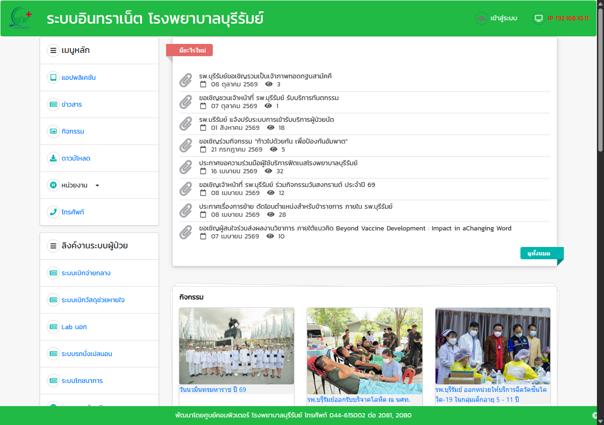
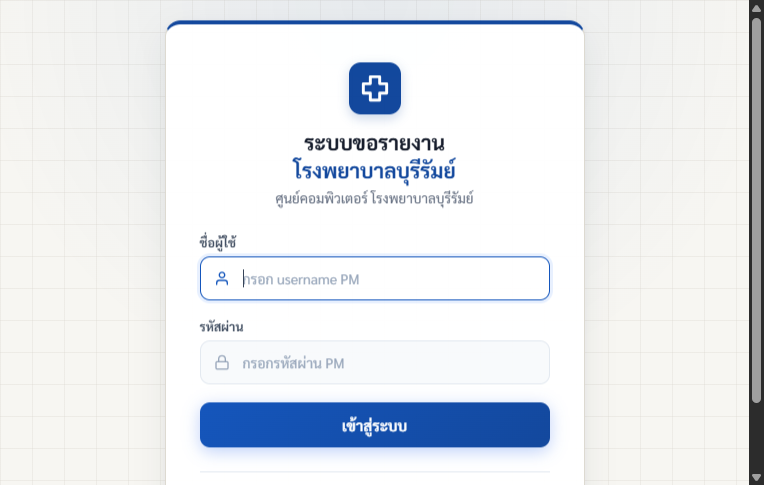

ระบบขอข้อมูลและรายงาน
โรงพยาบาลบุรีรัมย์
ยื่นคำขอรายงานสถิติและข้อมูลผู้ป่วยแบบออนไลน์ ติดตามสถานะงานและเปอร์เซ็นต์ความคืบหน้าแบบเรียลไทม์ พร้อมรับไฟล์รายงานได้สะดวกรวดเร็ว ผ่านศูนย์คอมพิวเตอร์ โรงพยาบาลบุรีรัมย์
ติดตามงานแบบเรียลไทม์
เช็คสถานะและเปอร์เซ็นต์ % ความคืบหน้าการจัดทำรายงานได้ตลอดเวลา
ล็อกอินด้วยบัญชี PM เดิม
ใช้ Username และ Password ของระบบ PM ได้ทันที ไม่ต้องลงทะเบียนใหม่
ระบบแชทสื่อสารในตัว
กดปุ่มทักแชทสอบถามรายละเอียดกับเจ้าหน้าที่ไอทีผู้รับผิดชอบงานได้โดยตรง
ช่องทางการเข้าใช้งานระบบ
บุคลากรสามารถเลือกเข้าใช้งานระบบขอรายงานข้อมูลได้ 2 ช่องทางตามความสะดวก
ช่องทางที่ 1: ลิงก์ตรงของระบบ
เหมาะสำหรับการตั้งเป็น Bookmark (ที่คั่นหน้า) บนเบราว์เซอร์ เพื่อกดเข้าสู่หน้าล็อกอินได้โดยตรงโดยไม่ต้องผ่านหน้าอื่น
- เปิดลิงก์เพื่อเข้าสู่หน้าจอเข้าสู่ระบบ
- กดปุ่ม Ctrl + D บนคีย์บอร์ดเพื่อบันทึกเป็นที่คั่นหน้า (Bookmark)
- รองรับ Google Chrome, Microsoft Edge และเบราว์เซอร์มาตรฐาน
ช่องทางที่ 2: ผ่าน Intranet โรงพยาบาล
สำหรับบุคลากรที่เข้าใช้งานผ่านหน้าหลักอินทราเน็ตโรงพยาบาลบุรีรัมย์เดิมเป็นประจำ

- เปิดหน้าแรก Intranet โรงพยาบาลบุรีรัมย์
- สังเกตเมนูด้านซ้ายมือ เลือก "ขอข้อมูล/รายงาน (ใหม่)"
การเข้าสู่ระบบด้วยบัญชีผู้ใช้ระบบ PM
ระบบเชื่อมโยงข้อมูลบุคลากรผ่านฐานข้อมูล PM ของโรงพยาบาลบุรีรัมย์โดยตรง เจ้าหน้าที่ทุกคนสามารถเข้าใช้งานได้ทันทีโดยไม่ต้องลงทะเบียนใหม่
- ชื่อผู้ใช้ (Username): กรอก username ของระบบ PM โรงพยาบาล
- รหัสผ่าน (Password): กรอกรหัสผ่านเดียวกับที่ใช้เข้าสู่ระบบ PM
เมื่อเข้าสู่ระบบสำเร็จ ข้อมูลชื่อ-สกุล, ตำแหน่ง, และฝ่าย/กลุ่มงานของท่านจะถูกกรอกลงในแบบฟอร์มคำขอให้อัตโนมัติ
ไปยังหน้าเข้าสู่ระบบ
ขั้นตอนมาตรฐานการขอข้อมูลและรายงาน
ข้อปฏิบัติและลำดับขั้นตอนตามระเบียบศูนย์คอมพิวเตอร์ โรงพยาบาลบุรีรัมย์
เข้าสู่ระบบ (Login)
ขั้นตอนที่ 1เข้าสู่ระบบด้วย Username และ Password ของผู้ที่ขอข้อมูลหรือผู้ที่ได้รับมอบหมายจากหน่วยงาน
http://192.168.95.80:3000/ หรือผ่านหน้าแรก Intranet รพ.
กรอกแบบฟอร์มคำขอข้อมูล
ขั้นตอนที่ 2กดปุ่ม "+ ขอข้อมูล / รายงานใหม่" แล้วระบุรายละเอียดที่ต้องการให้ครบถ้วน:
- ชื่องาน / หัวข้อรายงาน: ระบุชื่อรายงานที่ชัดเจน (เช่น "ยอดผู้ป่วยคลินิกเบาหวาน ปีงบประมาณ 2567")
- วัตถุประสงค์: เลือกตามจริง (งาน PCT, ประชุม, งานประจำ, วิจัย/เลื่อนระดับ, หรือหน่วยราชการภายนอก)
- กำหนดรับข้อมูลและความเร่งด่วน: ระบุวันที่ต้องการรับ และเลือกความเร่งด่วน (ปกติ 10 วันทำการ หรือ ขอด่วนพร้อมระบุเหตุผล)
- ช่องทางรับข้อมูล: ระบุ E-mail หรือช่องทางที่ต้องการรับไฟล์
โทรแจ้งศูนย์คอมพิวเตอร์ หรือ ส่งหนังสือ
ข้อกำหนดสำคัญเมื่อบันทึกข้อมูลเรียบร้อยแล้ว ให้ โทรแจ้งศูนย์คอมพิวเตอร์ว่ามีการยื่นขอข้อมูล หรือ พิมพ์หน้าขอข้อมูลที่บันทึกแล้ว ส่งเป็นหนังสือราชการ มายังศูนย์คอมพิวเตอร์ เพื่อให้เจ้าหน้าที่เปิดรับงานและมอบหมายผู้รับผิดชอบดำเนินการ
ติดตามสถานะและความคืบหน้า
ขั้นตอนที่ 4บุคลากรสามารถเปิดเข้ามาตรวจสอบสถานะของคำขอในหน้าเว็บได้ตลอดเวลา โดยระบบจะแสดงสถานะและแถบความคืบหน้า:
รับมอบข้อมูลและไฟล์รายงาน
ขั้นตอนที่ 5เมื่อคิวรี่ข้อมูลเสร็จสิ้น เจ้าหน้าที่จะจัดส่งไฟล์ข้อมูลตามช่องทางที่ผู้ขอแจ้งไว้ (เช่น E-mail) หรือสามารถติดต่อและรับไฟล์ผ่าน ระบบแชทในตัว ของรายการนั้นๆ ได้ทันที
มาตรการคุ้มครองข้อมูลส่วนบุคคล (PDPA)
ข้อกำหนดกฎหมายข้อมูลที่ขอต้องอยู่ภายใต้ พ.ร.บ. คุ้มครองข้อมูลส่วนบุคคล (PDPA) เพื่อรักษาความลับและสิทธิของผู้ป่วย โดยข้อมูลที่จัดทำ จะไม่สามารถระบุตัวตนของผู้ป่วยได้ (ไม่มีการเปิดเผยเลขประจำตัวประชาชน หรือชื่อ-สกุล) โดยจะแสดงเป็นข้อมูลสถิติ/ตัวเลขในเชิงภาพรวมเท่านั้น
คุยงานได้เร็วขึ้นด้วย
ระบบแชทสื่อสารในตัว
ลดขั้นตอนการส่งกระดาษหรือโทรประสานงานหลายต่อ ในแต่ละใบคำขอจะมีปุ่ม "ทักแชทสอบถามรายละเอียด" ให้ผู้ขอกับช่างศูนย์คอมพิวเตอร์ผู้รับผิดชอบงานคุยกันได้โดยตรงแบบเรียลไทม์
-
One-Click Chat ตรงจากใบงาน
กดปุ่มเดียวเปิดห้องแชทคุยเจาะจงเฉพาะเรื่องรายงานนั้นๆ เจ้าหน้าที่ทราบทันทีว่าเป็นงานชิ้นใด
-
แนบไฟล์ตัวอย่างและภาพหน้าจอ
ส่งไฟล์ Excel ฟอร์มตัวอย่าง หรือภาพหน้าจอประกอบเงื่อนไขข้อมูลได้สะดวกรวดเร็ว
-
ส่งข้อความเสียง (Voice Note)
กรณีมีเงื่อนไขซับซ้อน สามารถกดอัดเสียงอธิบายความต้องการเพิ่มเติมได้ทันที
คำถามที่พบบ่อย
ข้อสงสัยยอดนิยมเกี่ยวกับการใช้งานระบบขอข้อมูลและรายงาน